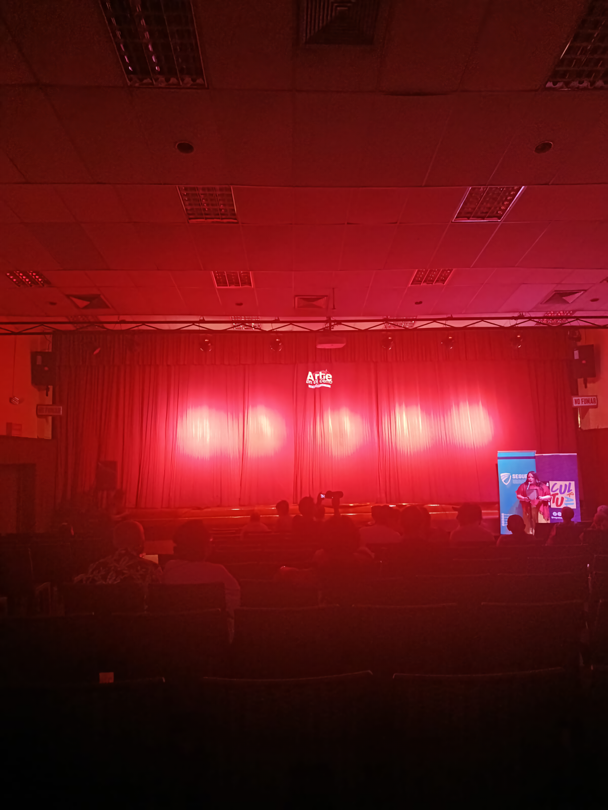
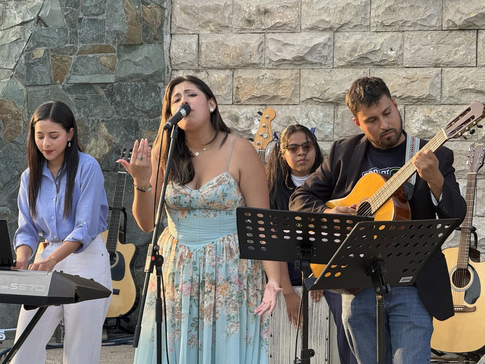
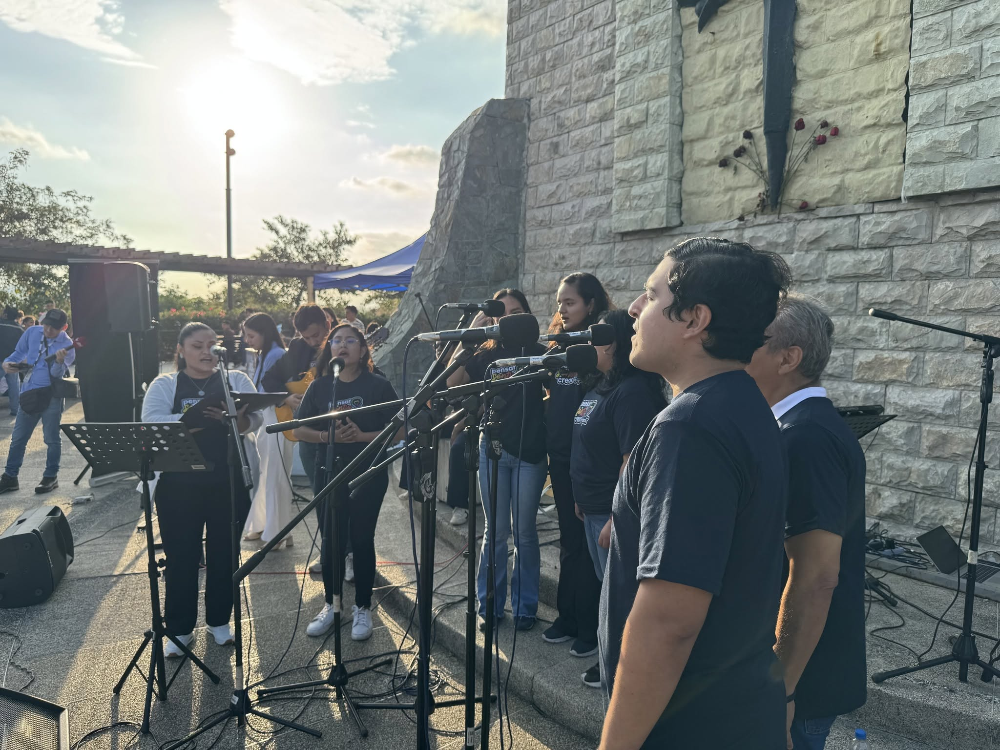
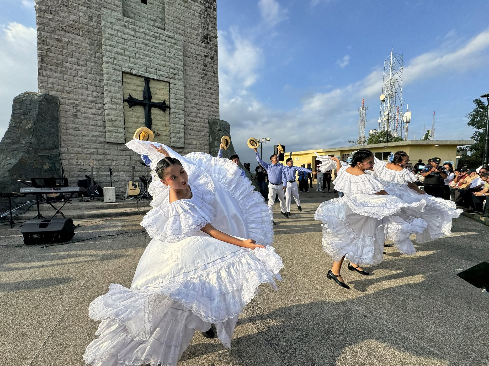
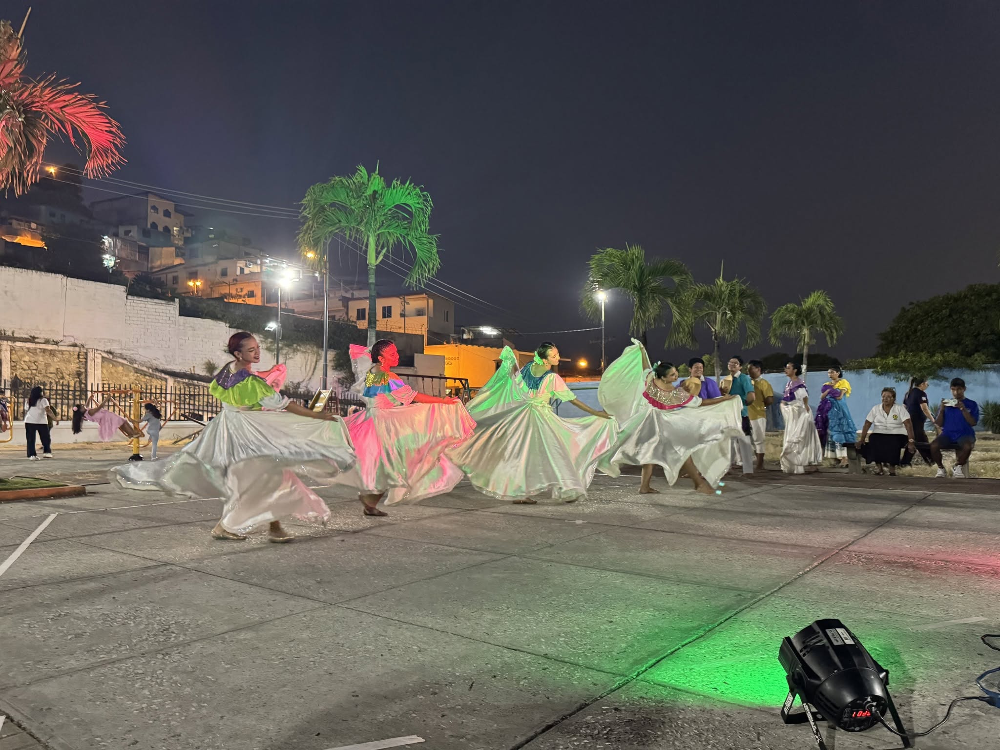
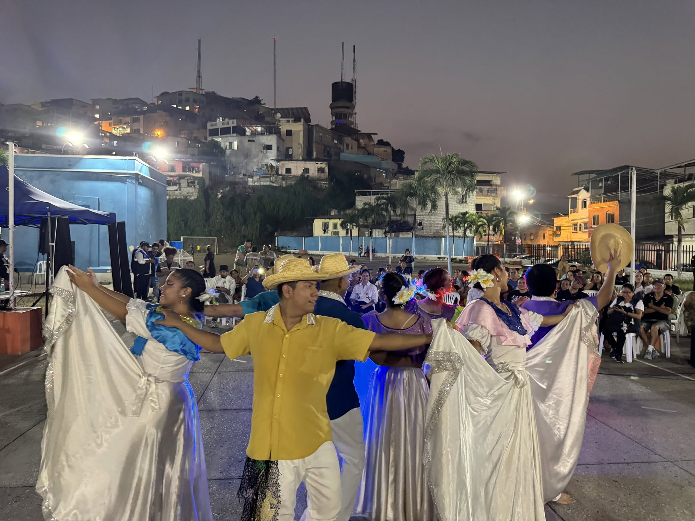
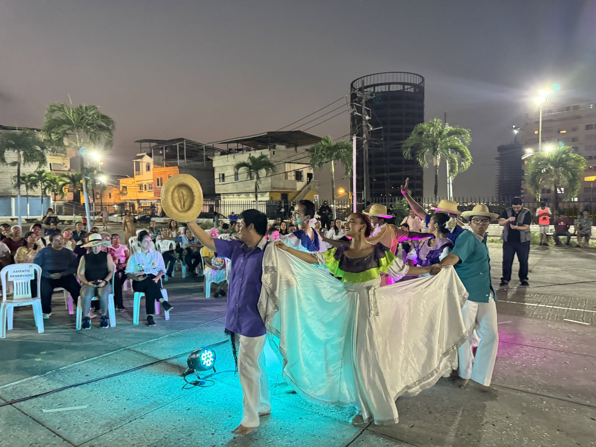
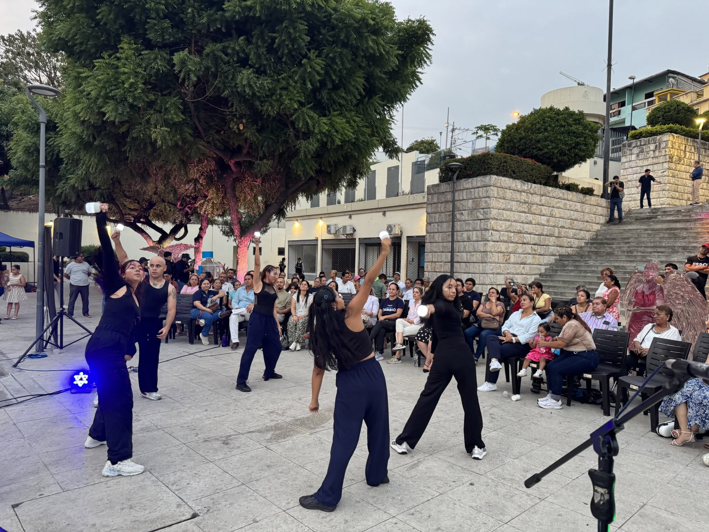
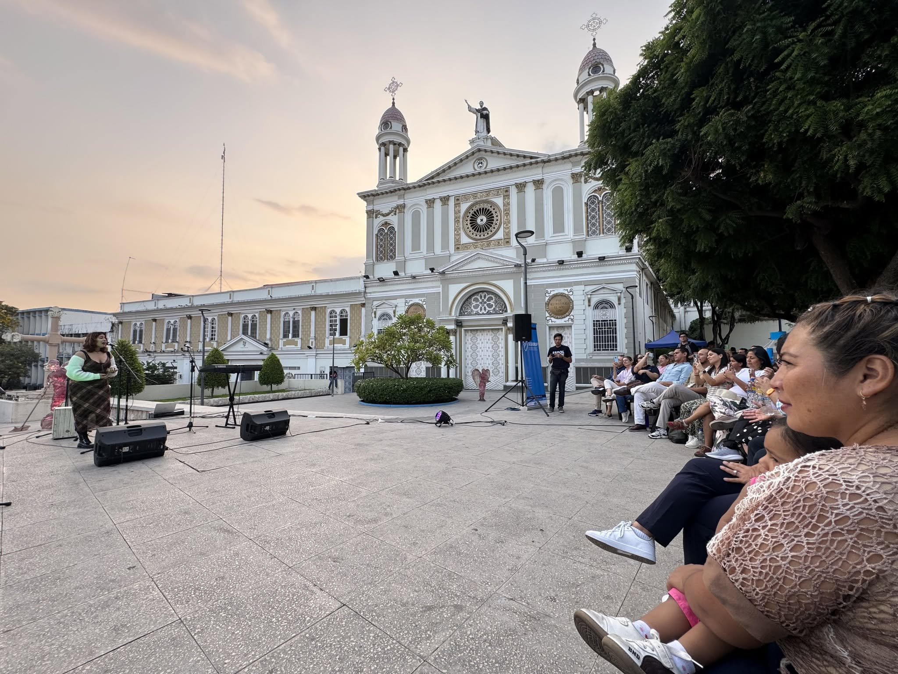
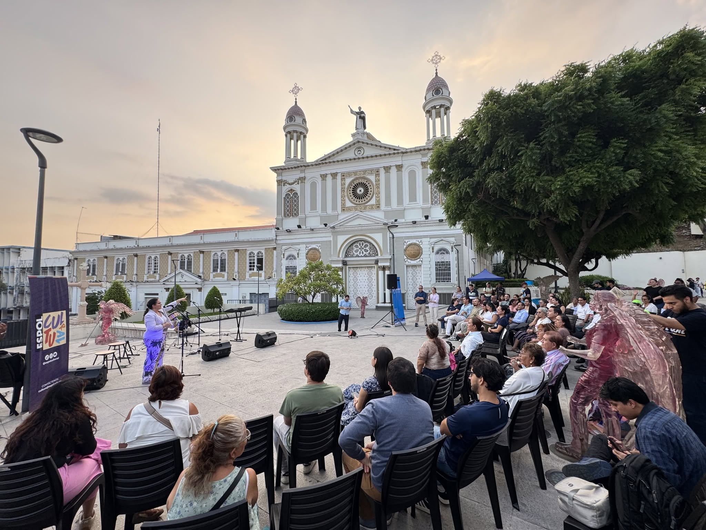

MÚSICA CORAL
Coro ESPOL
La expresión musical del coro institucional formó parte de esta jornada cultural, compartiendo el talento artístico de ESPOL.
✦ Talento politécnico
Un espacio para disfrutar de las expresiones artísticas
y conectar con la comunidad.

SOBRE EL EVENTO
Arte en el Cerro es una iniciativa cultural impulsada por ESPOL junto con Segura EP y la comunidad del Cerro del Carmen, que promueve el encuentro a través del arte y la cultura.
El proyecto inició el 21 de julio de 2026 y contempla presentaciones artísticas el primer viernes de cada mes, a las 17:00.
Esta página documenta especialmente la edición del 2 de octubre de 2026, que contó con el Coro ESPOL, el Grupo de Teatro ESPOL y la participación especial de Elena Erazo.
Debido a la lluvia, esa jornada se trasladó al Aula Magna de ESPOL Campus Las Peñas, en Guayaquil.
EL ARTE COMO HERRAMIENTA DE TRANSFORMACIÓN SOCIAL.
✦ EL TALENTO SOBRE EL ESCENARIO
Tres participaciones que dieron vida a Arte en el Cerro el 2 de octubre de 2026.
MÚSICA CORAL
La expresión musical del coro institucional formó parte de esta jornada cultural, compartiendo el talento artístico de ESPOL.
✦ Talento politécnico
ARTES ESCÉNICAS
El Grupo de Teatro ESPOL aportó la expresión de las artes escénicas a esta edición, fortaleciendo el encuentro entre arte y comunidad.
✦ Expresión escénica
INVITADA ESPECIAL
Elena Erazo fue la invitada especial de esta edición, sumándose a la celebración del arte, la cultura y la convivencia comunitaria.
✦ Participación especial
El Coro ESPOL, el Grupo de Teatro ESPOL y Elena Erazo compartieron su talento en esta edición de Arte en el Cerro
Explorar la galería✦ RECUERDOS DEL 02 DE OCTUBRE
Revive las presentaciones de la edición del 2 de octubre de 2026 y descubre los encuentros que dieron continuidad a esta iniciativa cultural.
✦ EDICIÓN DEL 02 DE OCTUBRE DE 2026
PRESENTACIÓN SELECCIONADA
Registro audiovisual de su participación en Arte en el Cerro.
EXPLORA LAS PRESENTACIONES
Selecciona una presentación y utiliza los controles del reproductor para verla.
✦ UNA HISTORIA QUE CONTINÚA
Antes de la jornada del 2 de octubre, Arte en el Cerro ya había reunido a artistas y comunidad en distintos encuentros. Explora las fotografías de las fechas anteriores.
El inicio de Arte en el Cerro.



Una nueva jornada de expresión cultural.



El arte volvió a reunir a la comunidad.



✦ ARTE EN LAS REDES
Descubre el Reel compartido por ESPOL Cultural y conecta con la iniciativa Arte en el Cerro.
Ver publicación en Instagram ↗✦ INFORMACIÓN DEL EVENTO
Los detalles de una jornada de arte, cultura y comunidad.
OCT 2026
Hora anunciada para la actividad.
Acceso libre
Un encuentro cultural gratuito y abierto a la comunidad.
Aula Magna
ESPOL Campus Las Peñas, Guayaquil, Ecuador.
✦ DONDE NOS ENCONTRAMOS
El 2 de octubre de 2026, Arte en el Cerro reunió a la comunidad en el Aula Magna de ESPOL Campus Las Peñas.
GUAYAQUIL · ECUADOR
ESCENARIO DEL EVENTO
Debido a las condiciones climáticas, la actividad se realizó en el Aula Magna, manteniendo su propósito de acercar el arte a la comunidad.
Ver ubicación en Google Maps